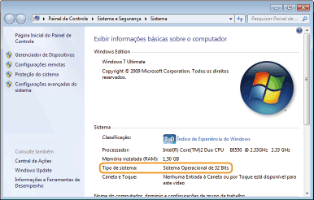

[Iniciar]

0KUF-010
Windows XP Professional/Server 2003
[Iniciar] selecione [Impressoras e aparelhos de fax].
selecione [Impressoras e aparelhos de fax].
[Iniciar]
Windows XP Home Edition
[Iniciar] selecione [Painel de Controle] [Impressoras e outros itens de hardware] [Impressoras e Aparelhos de Fax].
[Iniciar]
Windows Vista
[Iniciar] selecione [Painel de Controle] [Impressora].
[Iniciar]
Windows 7/Server 2008 R2
[Iniciar] selecione [Dispositivos e Impressoras].
[Iniciar]
Windows 8/Server 2012
Clique com o botão direito no canto inferior esquerdo da tela selecione [Painel de Controle] [Exibir impressoras e dispositivos].
Clique com o botão direito no canto inferior esquerdo da tela
Windows Server 2008
[Iniciar] selecione [Painel de Controle] clique duas vezes em [Impressoras].
[Iniciar]
Se você está usando o Windows Vista/7/8/Server 2008/Server 2012, ative a [Descoberta de rede] para ver os computadores em sua rede.
Windows Vista
[Iniciar] selecione [Painel de Controle] [Exibir status de rede e tarefas] em [Descoberta de rede], selecione [Ativar descoberta de rede].
[Iniciar]
Windows 7/Server 2008 R2
[Iniciar] selecione [Painel de Controle] [Exibir status de rede e tarefas] [Alterar as configurações de compartilhamento avançadas] em [Descoberta de rede], selecione [Ativar a descoberta de rede].
[Iniciar]
Windows 8/Server 2012
Clique com o botão direito do mouse no canto inferior esquerdo da tela selecione [Painel de Controle] [Exibir status de rede e tarefas] [Alterar as configurações de compartilhamento avançadas] em [Descoberta de rede], selecione [Ativar a descoberta de rede].
Clique com o botão direito do mouse no canto inferior esquerdo da tela
Windows Server 2008
[Iniciar] selecione [Painel de Controle] clique duas vezes em [Centro de Rede e Compartilhamento] em [Descoberta de rede], selecione [Ativar a descoberta de rede].
[Iniciar]
Se o seu computador não exibir a tela [Instalação de CD-ROM/DVD-ROM] depois de inserir o CD-ROM ou DVD, siga o procedimento abaixo. O exemplo a seguir usa "D:" como o nome da unidade de CD-ROM ou DVD. O nome da unidade de CD-ROM ou DVD pode ser diferente em seu computador.
Windows XP/Server 2003
[Iniciar] selecione [Executar] digite "D:\MInst.exe" clique em [OK].
[Iniciar]
Windows Vista/7/Server 2008
[Iniciar] digite "D:\MInst.exe" em [Pesquisar programas e arquivos] ou [Iniciar pesquisa] pressione a tecla [ENTER] no teclado.
[Iniciar]
Windows 8/Server 2012
Clique com o botão direito do mouse no canto inferior esquerdo da tela selecione [Executar] digite "D:\MInst.exe" clique em [OK].
Clique com o botão direito do mouse no canto inferior esquerdo da tela
Se não souber se o computador está executando Windows de 32 ou 64 bits, siga o procedimento abaixo para verificar.
1
Abra [Painel de Controle].
Windows Vista/7/Server 2008
[Iniciar] selecione [Painel de Controle].
[Iniciar]
Windows 8/Server 2012
Clique com o botão direito no canto inferior esquerdo da tela selecione [Painel de Controle].
Clique com o botão direito no canto inferior esquerdo da tela
2
Abra [Sistema].
Windows Vista/7/8/Server 2008 R2/Server 2012
Clique em [Sistema e Segurança] ou [Sistema e Manutenção] [Sistema].
Clique em [Sistema e Segurança] ou [Sistema e Manutenção]
Windows Server 2008
Clique duas vezes em [Sistema].
Clique duas vezes em [Sistema].
3
Verifique a arquitetura de bits.
Sistemas operacionais de 32 bits
[Sistema Operacional de 32 Bits] é exibido.
[Sistema Operacional de 32 Bits] é exibido.
Sistemas operacionais de 64 bits
[Sistema Operacional de 64 Bits] é exibido.
[Sistema Operacional de 64 Bits] é exibido.

Windows XP/Server 2003
[Iniciar] [Meu Computador] [Adicionar e remover programas].
[Iniciar]
Windows Vista/7/Server 2008 R2
[Iniciar] [Painel de Controle] [Desinstalar programa].
[Iniciar]
Windows 8/Server 2012
Clique com o botão direito no canto inferior esquerdo da tela [Painel de Controle] [Desinstalar programa]
Clique com o botão direito no canto inferior esquerdo da tela
Windows Server 2008
[Iniciar] [Painel de Controle] dê duplo-clique em [Programas e recursos].
[Iniciar]
Windows XP
[Iniciar] [Painel de Controle] [Desempenho e manutenção] [Sistema] [Hardware] [Gerenciador de dispositivos].
[Iniciar]
Windows Vista/7/Server 2008 R2
[Iniciar] [Painel de Controle] [Hardware e som] ou [Hardware] [Gerenciador de dispositivos].
[Iniciar]
Windows 8/Server 2012
Clique com o botão direito no canto inferior esquerdo da tela [Painel de controle] [Hardware e som] [Gerenciador de dispositivos].
Clique com o botão direito no canto inferior esquerdo da tela
Windows Server 2003
[Iniciar] [Painel de controle] [Sistema] [Hardware] [Gerenciador de dispositivos].
[Iniciar]
Windows Server 2008
[Iniciar] [Painel de controle] clique duplo em [Gerenciador de dispositivos].
[Iniciar]